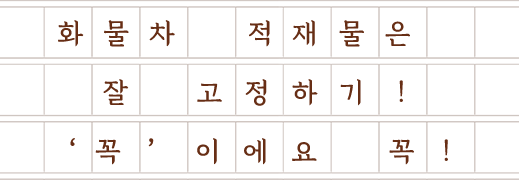

화물차 적재물은 잘 고정하기!
‘꼭’ 이에요 꼭!

고속도로를 타고 여행을 갔던 어느 오후로 기억해요. 지금은 날씨가 꽤 춥지만, 그때는 날씨가 정말 화창해서 이대로 달리면 하늘로 날아갈 것만 같았죠. 고속도로 나들목으로 올려서 한참을 달리던 중이었어요. 아마 와촌휴게소를 조금 지났던 걸로 기억해요. 이때까지만 해도 오랜만에 여행을 가는 즐거운 마음에 신이 나서 주변 차들을 둘러볼 겨를도 없었죠. 그런데 그 찰나! 앞의 차량이 조금 이상한 거예요. 검은 세단 하나가 브레이크를 밟는지 브레이크 등이 불규칙적으로 들어왔다 나갔다 하더군요. 저는 약간 속도를 줄이고 혹시 모르니 비상 깜빡이 버튼 위로 일단 손이 갔어요. 누르지는 않았어요. 경계 태세였던 거죠. 이 상태에서 앞의 검은 세단을 관찰하니 급하게 오른쪽 갓길로 차를 빼내더군요.
저는 단순히 그 차량 자체의 문제로만 생각했어요. 그런데…. 그게 아니었어요. 검은 세단 뒤를 따라가던 흰색 세단이 특정 위치를 지나는 순간, 갑자기 문짝만 한 철판이 누워있다가 일어나는 거예요!
가로세로 길이가 족히 2m 가까이 되는 철판이었는데 철판의 끝이 살짝 굽혀져 있어서 차가 지나갈 때마다 그 굽혀진 부분을 밟게 되면 갑자기 일어서고 다시 눕고를 반복하는 기가 막힌 상황이었어요. 이제 저희 차량이 그 철판을 밟을 차례였던 거죠. 저는 비상 깜빡이 등을 켜고 서서히 속도를 줄이면서 차로를 변경해 갓길로 옮겼어요. 그리고 비상 깜빡이 등을 유지하며 뒤 차량에 이 상황을 알렸어요. 뒤편의 차들도 혼비백산하는 상황이었어요. 갑자기 철판이 떡하니 일어섰다가 누웠다가 하니 말이에요. 뒤에서는 차들이 서로 급하게 차로를 변경하다가 사고가 날 뻔한 상황이 이어지고 있었고, 그야말로 혼돈 그 자체였습니다.
일단 상황을 알렸으니 저도 탈출해야 했죠. 가속하여 무사히 철판을 지나쳐 차로로 진입했어요. 그대로 놔두면 운전자들이 큰 사고를 당할 것이 분명했어요. 결국 저는 휴게소로 빠져서 고속도로 낙하물 신고 번호로 신고했어요. 낙하물이 떨어져서 철판이 수시로 길에서 일어나고 있다고요. 그리고 휴게소에 혹시나 그 트럭이 없는지 찾아보았습니다만 흔적도 없더군요. 차를 타고 다니면서 그렇게 놀랐던 적은 처음이었던 것 같습니다. 그 낙하물을 제거하시는 관계자분들이 걱정되기도 했습니다. 산업용 철판인 것 같던데 무게와 크기가 엄청날 것 같았거든요. 그것을 고속으로 차량이 달리는 곳에서 치우는 과정에서 다치지는 않을지….
적재물을 싣고 다니시는 분들께 적재물 관건*을 확실하게 해주시길 진심으로 당부드립니다. 그리고 그날 저희 뒤편으로 온 차들은 사고가 나지 않으셨기를 기원합니다.
「신호등」에서 독자 여러분의 사연을 모집합니다. 운전과 관련된 재미있는 사연이나 알쏭달쏭한 상황이 있다면 A4용지 1장 분량(글자 크기 12pt 기준)의 원고를 보내 주세요. 사연이 선정된 분께는 소정의 상품을 지급합니다. (이름/휴대전화번호 기입 필수)
사연 보내는 곳 hongbo@koroad.or.kr